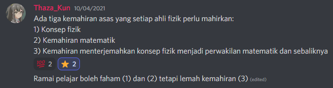

Mukadimah
Pada tahun lepas, aku ditanya akan nasihat belajar Fizik dalam saluran pelayan Discord Masyarakat Sains & Teknologi Malaysia. Aku tahu ramai sebelum-sebelum ini sudah menasihati agar mengasah kemahiran matematik kerana itulah bahagian tersusah Fizik tetapi bagi aku nasihat itu agak kurang memuaskan. Nasihat yang aku bagi waktu itu berbunyi begini:

Dalam rencana ini, izinkan aku menghurai lanjut supaya boleh difahami secara menyeluruh dan menambah mana yang kurang. Walaupun nasihat ini ditujukan khusus kepada pelajar Fizik, iaitu bidang yang aku ceburi, aku yakin ia ada manfaat untuk pelajar sains umumnya.
Berfikir dan Bertanya
Kerja seorang saintis bolehlah dirumuskan begini:
Saintis berfikir tentang alam dan bertanyakan alam tentang sifatnya.
Oleh itu, dapatlah diperkatakan bahawa seorang pelajar sains seharusnya mempersiapkan dirinya agar boleh bekerja dengan fikiran dan bekerja dengan alam. Perkara ini haruslah dibezakan dengan jelas kerana pencampuradukannya akan membawa kecelaruan dalam apa yang harus ditumpukan pelajar sains. Fikiran kita bukanlah alam nyata dan alam nyata tidak tertakluk pada fikiran kita.
Kitaran Kemahiran Sains
Adapun dua perkara utama yang disebutkan tadi, kita sepatutnya tahu cara untuk berpindah dari fasa bekerja dengan alam dan fasa bekerja dengan fikiran. Jadi tidak cukup sekadar tahu melaksanakan eksperimen mahupun sekadar menyelesaikan masalah matematik semata-mata. Mereka seharusnya juga tahu beralih dari alam nyata ke alam fikiran dan begitu juga sebaliknya.
Jadinya, seorang saintis perlu memahiri empat perkara ini:
- Kemahiran bekerja dalam alam nyata
- Kemahiran menterjemah dari alam nyata ke alam fikiran
- Kemahiran bekerja dalam alam fikiran
- Kemahiran menterjemah dari alam fikiran ke alam nyata
1. Kemahiran Bekerja Dalam Alam Nyata
Perhubungan antara penghuni-penghuni alam hanya akan dapat diperolehi jika kita bertanya alam secara terus. Daripada pertanyaan inilah munculnya konsep-konsep sains yang kita kenali hari ini. Pertanyaan alam ini kita lazim gelarkannya sebagai ‘berujikaji’ atau ‘bereksperimen’ kerana pencungkilan jawapan daripada alam memerlukan kaedah tertentu.
2. Kemahiran Menterjemah Dari Alam Nyata Ke Alam Fikiran
- Kemahiran Mengekstrak Maklumat
3. Kemahiran Bekerja Dalam Alam Fikiran
Selain itu, saintis perlu ada cara berfikir dengan mantap. Untuk itu, saintis lazimnya akan guna matematik sebagai alat bantu fikir. Ia membantu menghala pemikiran ke arah sesuatu yang sistematik dan menyingkirkan pengaruh diri yang mencemarkan.
- Kemahiran Matematik
- Kemahiran Aturcara
4. Kemahiran Menterjemah Dari Alam Fikiran Ke Alam Nyata
- Kemahiran Mentafsir Rumus Matematik (Tidak semua pembolehubah sama peranannya)